08 · 问题复杂度
← 返回课程目录The original article content is not automatically translated.
本文最后更新于 2026年11月5日 晚上
北京大学信息科学技术学院
算法设计与分析(2026春)的课程笔记
第八章：问题复杂度
题外话：由于fnlp只有期中考和Lab而无期末，加之笔者一点也不想再读fys毫无意义的ppt，以及claude随便生成的笔记可读性都远胜过我认真撰写的笔记，因此fnlp笔记在此就暂且停更，哪天心情好本人再勉为其难写写。谁曾想呢，期中考后的算分大不如前，居然越来越抽象，笔者听课听的一头雾水，没几章能听得懂，心想长此以往期末凶多吉少，于是前来开新坑，希望能女娲补天，临时抱佛脚一番罢。由于网络流内容笔者始终学不懂，先从第八章开更~
第八章开始是一些看上去像废话的定义，我们简单回顾一下
算法的评价指标
算法正确性：给定 有效输入，算法经过 有限时间 计算，产生 正确答案，那么算法就是正确的
正确性证明有方法上的和程序上的(数学推导 or 代码实现)
工作量：对于给定问题,该算法所执行的基本运算的次数
那么这里就牵扯到一个选择基本运算的问题，这个因地制宜，比如查找排序就是比较次数，矩阵乘法就是实数乘法等等
最坏时间复杂度 平均时间复杂度
占用空间：分为存储程序输入数据的空间 和 存储中间结果的额外空间
其中：
存储程序空间一般是常数，可以忽略不计
输入数据空间为输入规模
所以空间复杂度一般考虑的是额外空间大小，同样也有最坏和平均之分
如果额外空间相对于输入规模是常数, 称为原地工作的算法
简单性：顾名思义就是算法和程序结构简单，易于验证正确性，容易调试，当然效率不一定高，俗称“暴力”，在算法竞赛中可以用来对拍 or 骗分
基于时间的最优性：分为最坏情况下最优和平均情况下最优
定义很冗长，这里不加赘述，下面说说寻找最优算法的方式
- 首先设计算法，求其，得到最坏情况下时间复杂度上界
- 然后寻找函数，使得对任何算法都存在一个规模为的输入，并且在这个输入下该算法至少要做次基本运算，得到最坏情况下时间复杂度下界
- 如果和的阶相同，那么算法就是最坏情况下最优的
- 否则若比高阶，则需改进A让逼近，或者重新找阶更高的，最终使得和的阶相同
平凡下界与直接计算最少运算次数
平凡下界：算法的输入输出规模
直接计算最小运算数：这里回顾了一下FindMax算法的比较次数至少为，因为每个元素至少要和其他元素比较一次才能确定最大值
决策树
在讲决策树之前，先让我们回忆一下检索问题的时间复杂度
顺序检索的时间复杂度是很好分析的，，
而对于二分检索：
可以用数学归纳法证明
的计算稍微有些麻烦
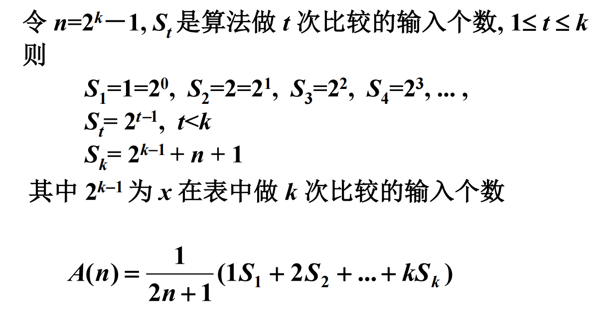
如图所示，这里通过统计算法做次比较的输入个数来进行递推，最后用经典的错位相减法求出
决策树是一棵二叉树，给定一个算法的决策树，对于任何输入实例，算法将从树根开始，沿一条路径向下，在每个结点做一次基本操作(比较)，然后根据比较结果(< , =, >)走到某个儿子结点或者在该处停机，对于给定实例的计算恰好对应了一条从树根到树叶或者某个内部结点的路径
结点数(或树叶数)等于输入分类的总数
最坏情况下的时间复杂度对应于决策树的深度
平均情况下的时间复杂度对应于决策树的平均路径长度
这些定义和性质刚开始看十分抽象，让我们回顾一下数算讲过的二叉树性质
- 二叉树的层至多个结点
- 深度为的二叉树至多有个结点
- 个结点二叉树深度至少为
现在！对于检索问题，我们要如何建立决策树呢
检索问题的一般定义: 给定按递增顺序排列的数组 (项数 )和数 ，如果 在 中, 输出 的下标; 否则输出
设检索算法为，给定输入规模，的决策树为一棵二叉树，其结点被标记为，标记规则如下：
根据算法，首先与比较的元素是，则树根标记为
假设某结点被标记为：
- 的左儿子是：当 时，算法下一步与比较的项的下标
- 同理，的右儿子是：当 时，算法下一步与比较的项的下标
- 若时算法停止，则无左儿子
- 同理，若时算法停止，则无右儿子
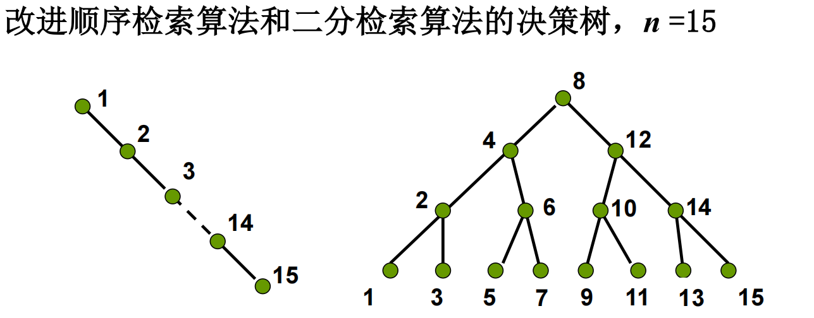
如图所示，这是的决策树
给定输入, 算法 A 将从根开始, 沿一条路径前进, 直到某个结点为止
所执行的基本运算次数是这条路径的结点个数. 最坏情况下的基本运算次数是树的深度+1
由个结点二叉树深度至少为，故二分检索算法的最坏时间复杂度下界为，而二分检索算法的最坏时间复杂度上界也为
因此，对于有序表搜索问题, 在以比较作为基本运算的算法类中，二分检索算法是最坏情况下最优的
接下来是第二部分：排序算法时间复杂度分析
冒泡排序
冒泡排序相对来说是老熟人了，大家计概便熟练掌握，最坏复杂度显然是
平均情况需要计算平均逆序数，过程如下
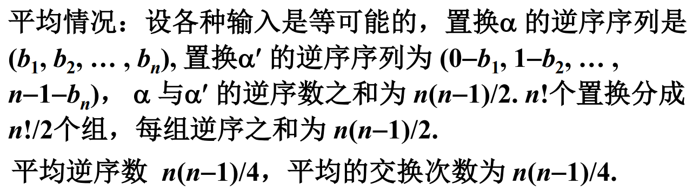
最后可以得出冒泡排序的最坏和平均时间复杂度都为
堆排序
早在数算时大家就熟练掌握堆排序了，这里我们再次做一个回顾
算分给出的定义很是冗长，说白了堆就是一棵完全二叉树……
如果每个结点元素都不小于(或不大于)其子结点元素，则称该树为堆
堆的运算：
整理Heapify
建堆BuildHeap
堆排序调用BuildHeap 次，调用Heapify 次
因此堆排序的时间复杂度为
排序问题的决策树
考虑以比较运算作为基本运算的排序算法类
任取算法，输入，构建决策树
- 第一次比较元素为，，那么树根就标记为
- 假设某结点被标记为
- 如果，则该结点的左儿子标记为：下一步比较的元素下标
- 同理，如果，则该结点的右儿子标记为：下一步比较的元素下标
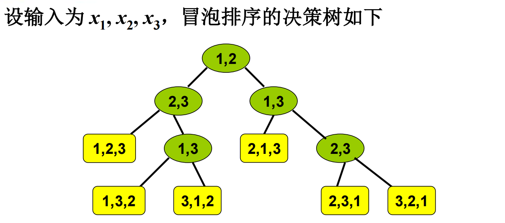
如图所示，上面是一棵冒泡排序的决策树
任意输入：对应了决策树树中从树根到树叶的一条路径
算法最坏情况下的比较次数：树深
删除非二叉的内结点，得到二叉树叫做 B-树
B-树深度不超过决策树深度，B-树有片树叶
依旧是数算经典重现。
最坏复杂度下界
设B-树树叶为，树深，则
可以通过归纳证明
又由于决策树的树叶数为，所以有
因此，，又由于，所以排序问题的最坏时间复杂度下界为
当然可以再精确计算一下~
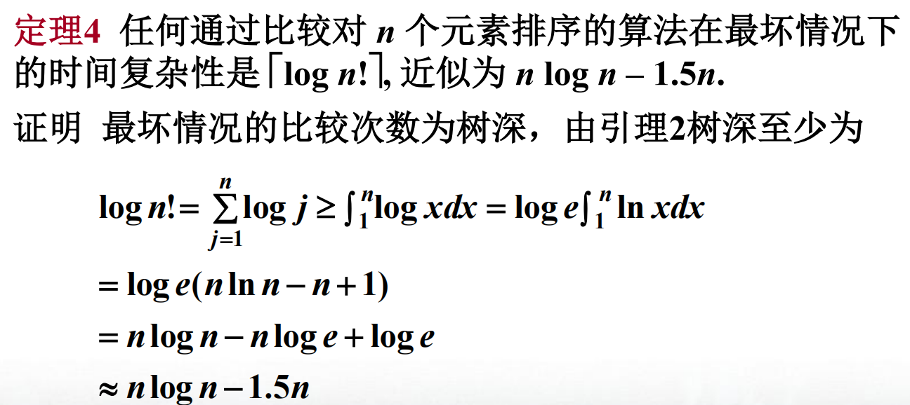
综上所述，堆排序最坏情况下阶达到最优
平均复杂度下界
这里引入了一个神秘的概念：epl值
假设所有输入等概率分布，表示B树从根到树叶所有路径长度之和，那么的最小值就是平均比较次数的下界
可以通过反证法证明，在有片树叶的所有B树中，树叶分布在两个相邻层上的树epl值最小
于是可以推出
(具体数学推导此处暂时略过)
那么
代入，有，其中
综上所述，堆排序平均情况下阶达到最优
几种排序算法的比较
数算经典知识，此处温故知新
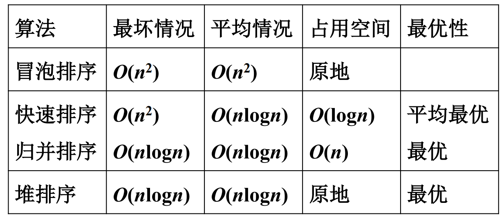
排序算法讲完了，下面我们来看看第三部分：选择算法
选择算法的时间复杂度分析
任给一个选择算法，对于任意输入,都存在一个一个确定操作序列
中操作分为两类：
- 决定性的：能够对确定输出结果提供有效信息
- 非决定性的：对确定结果无帮助
对于下界证明，我们构造最坏输入，使得包含尽量多的非决定性操作
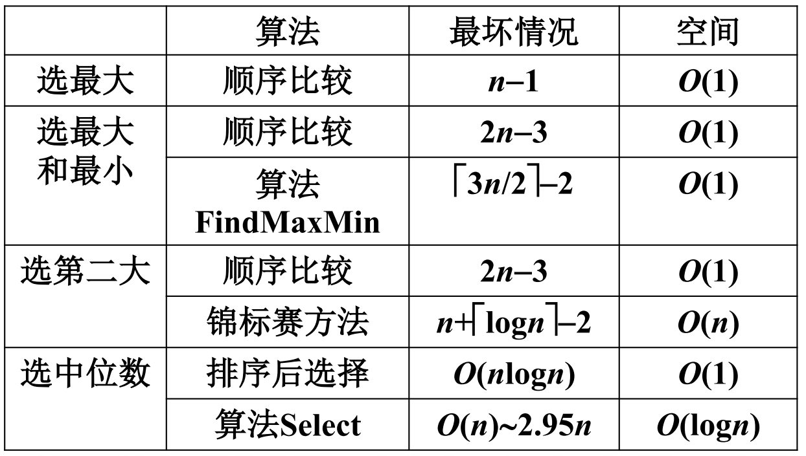
上面是一些常见算法的最坏情况结果
选最大最小的FindMaxMin
证明：任何通过比较找到最大和最小的方法至少需要次比较
我们不妨设个数互不相同，为任意一种找最大最小的算法
假设最大值是，那么必须确定有个数小于
同理设最小值是，那么必须确定有个数大于
这样一来，总共需要个信息单位
下面我们定义数的“状态”，没参与过比较的数状态为N
如果比较前x状态N，若x大变W，x小变L
如果比较前x为W，即赢过一次，那么x大还是W，x小变WL
如果比较前x为L，即输过一次，那么x大变WL，x小还是L
如果比较前x为WL，那么无论大小，x都还是WL
容易看出，只有比较后数的状态改变，信息单位才能增加
增加的信息单位可能是0，1或2
所以我们构造最坏输入的原则是：通过对参与比较的x和y赋值，使得他们在比较之后状态尽可能少变化，从而在比较中得到最少的信息单位
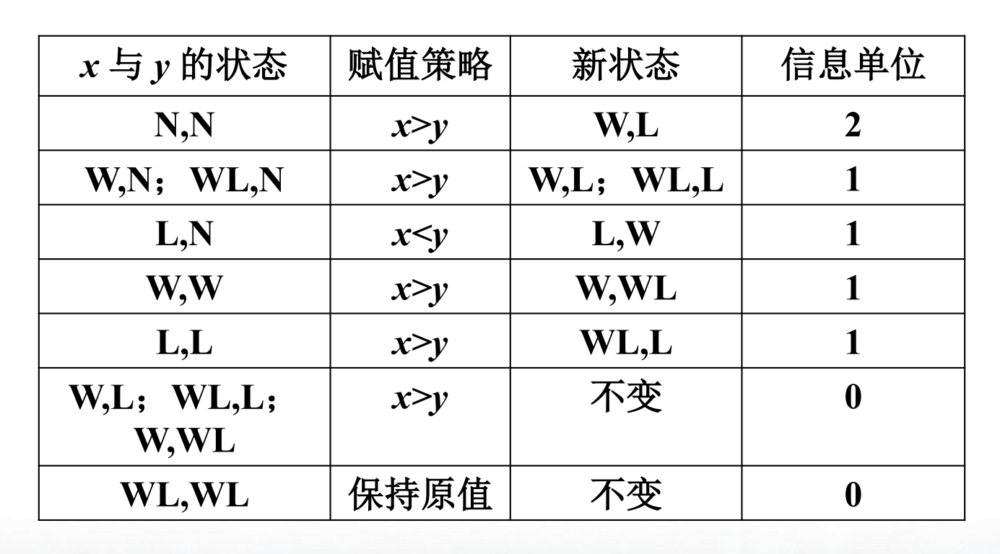
上面给出了一个赋值策略
在此策略之下，一次比较获得2信息单位的情况只有x和y都处于N，N
算法最多只有次这样的比较
这些比较最多获得信息单位
而对于其他情况，一次比较最多获得1信息单位，所以至少还要次比较才能获得所有的个信息单位
这里可以根据奇偶讨论一下， 最后得出的结果均为：次比较
由此就证明了FindMaxMin算法的最优性
找第二大问题
依旧假设个数彼此不等
显然找第二大元素首先得找最大元素，这里需要至少次比较
接下来就是在被最大元素直接淘汰的元素中找最大
(如果是被非最大元素淘汰，那么显然不会是第二大)
第一部分的工作量是确定的，我们只能通过算法控制第二部分
尽量增加最大元素直接参与的比较，让更多元素直接被最大淘汰，参与第二大的竞争，从而加大第二部分工作量，得到最坏情况
直观想法：两元素比较，原来赢的多的继续赢(?)
下面我们考虑元素的赋值规则，先定义元素的权，表示以为根的子树中结点数
规则如下：
- 初始每个元素权都为1
- 算法只对权大于0的元素赋值
- 当时，，赋值不变，和比较对于确定第二大无意义
- 当，时
若，则的赋值大于的赋值(若不满足，增加的值直至满足)，同时令，
同理若，则的赋值大于的赋值(若不满足，增加的值直至满足)，同时令，
本质上就是让赢得多的继续赢！
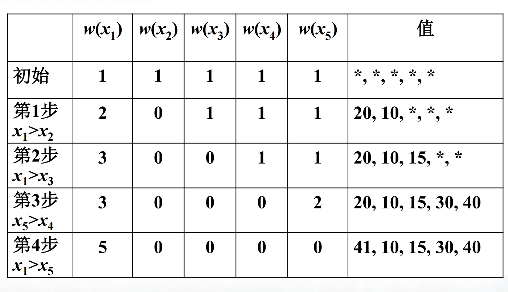
上面是一个赋值的实例，我们一起看看
初始时每个元素权为1，且都未被赋值，我们用*表示
第一步比较，按照规则，，,我们可以令，
第二步比较，按照规则，，,我们可以令
第三步比较，按照规则，，,我们可以令，
第四步比较，按照规则，，,但由于，我们需要增加的值，如令即可
在比较的同时，我们可以构造如下一棵树：
初始是森林，有个结点
如果，是子树树根，算法比较和
如果和以前没有参与过比较，任意赋值给和，如大于，那么就将作为的儿子
如果和已经参与过比较赋过值，，那么将作为的儿子，以为根的子树作为的子树
下面是一个实例
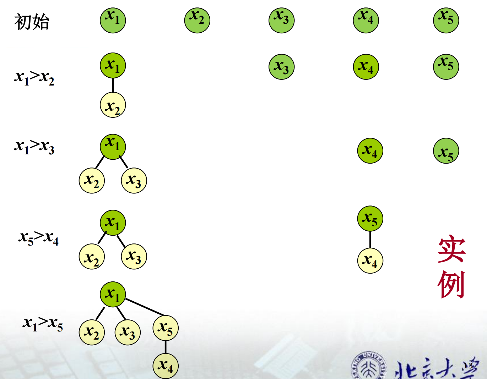
根据上述规则，赋值结束后只有根节点权为，其余结点权为
令表示 最大元素 在它通过第次比较后 形成以它为根的子树 的结点数
设第次比较是最大元素和，那么比较前，而
所以
设为算法运行时最大元素与权不为的结点比较次数
所以通过最大元素比较而被淘汰的元素数量
为确定第二大需要淘汰个元素，至少次比较
加上第一部分确定最大元素的次比较，总比较次数为
结论：锦标赛方法是找第二大的最优算法
找中位数算法
首先假设数组个数为奇数，中位数为
我们定义决定性的比较为：建立了与之间的大小关系的比较
，x满足上述条件的第一次比较
，x满足上述条件的第一次比较
非决定性的比较：，时，与的比较
对于任意找中位数算法，根据的比较顺序，对输入赋值规则如下：
- 任意分配一个值给
- 如果比较和，且和都未被赋值，那么任意赋值给和，使得
- 如果比较和，且，未被赋值，则对赋值使得
- 同理如果，未被赋值，则对赋值使得
- 如果存在个元素已经得到小于(大于)，则对未赋值的元素全部分配大于(小于)的值
在上述规则下，直到赋值完成，进行的具有赋值的比较都是非决定性的，且至少有次，加上为了找中位数必须的次比较，总比较次数至少是次
结论：Select算法在阶上达到最优
最后是几种选择算法的总结
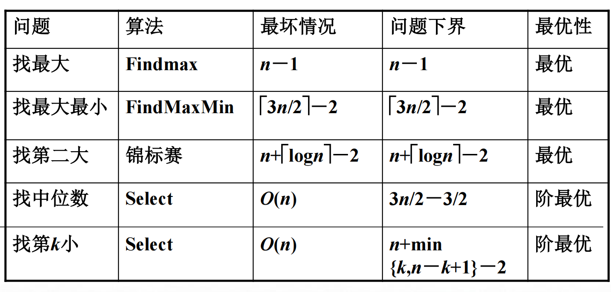
通过归约确认问题计算复杂度下界
这一部分就与下一章的NP完全性内容有一定关系了，属于是承上启下
假设有问题P和Q，Q时间复杂度已知且至少线性，为
假设存在变换，可以将任意Q的实例转换为P的实例，并且的时间复杂度为线性的，反变换也是线性
那么解Q的算法
那么可知解P的算法也能解Q，且时间复杂度的阶一样
这时我们就认为P和Q一样难，记作，其中表示线性时间
例如判断素数问题testp和因子分解问题factor一样难
求平面上个点的最邻近点对和判断个数是否存在相同元素一样难
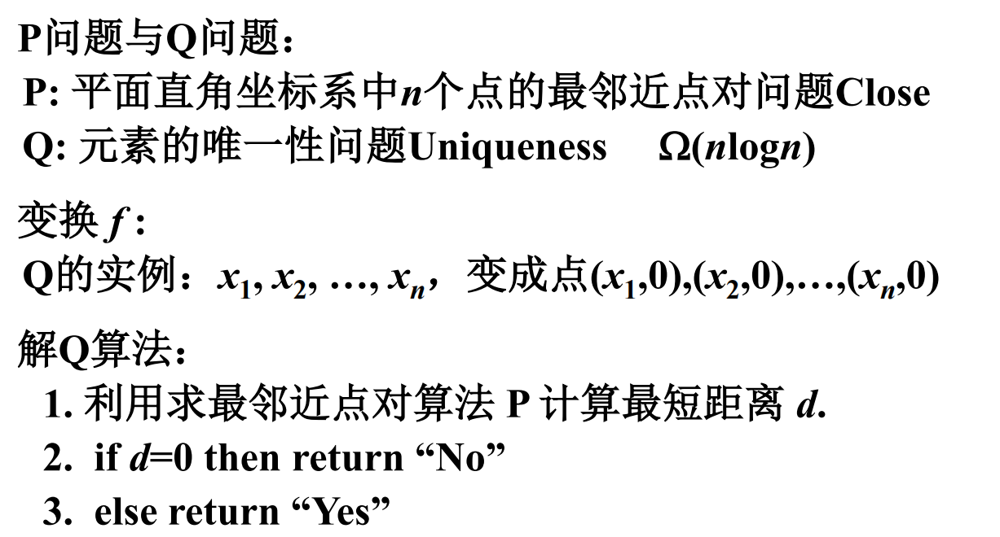